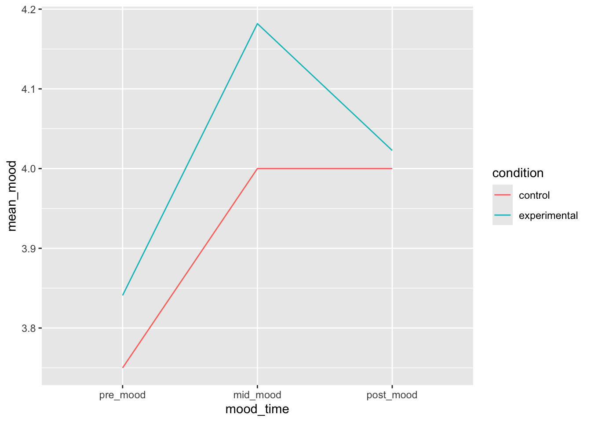
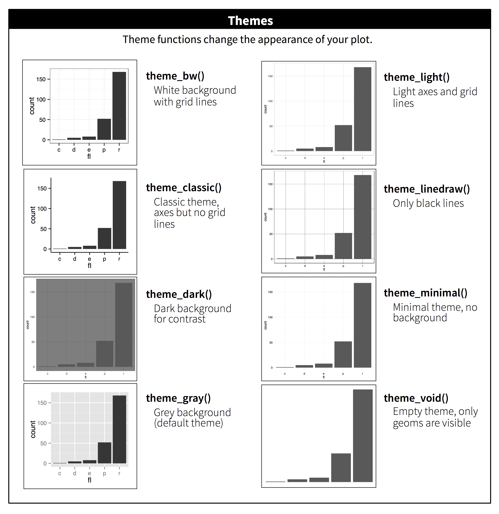
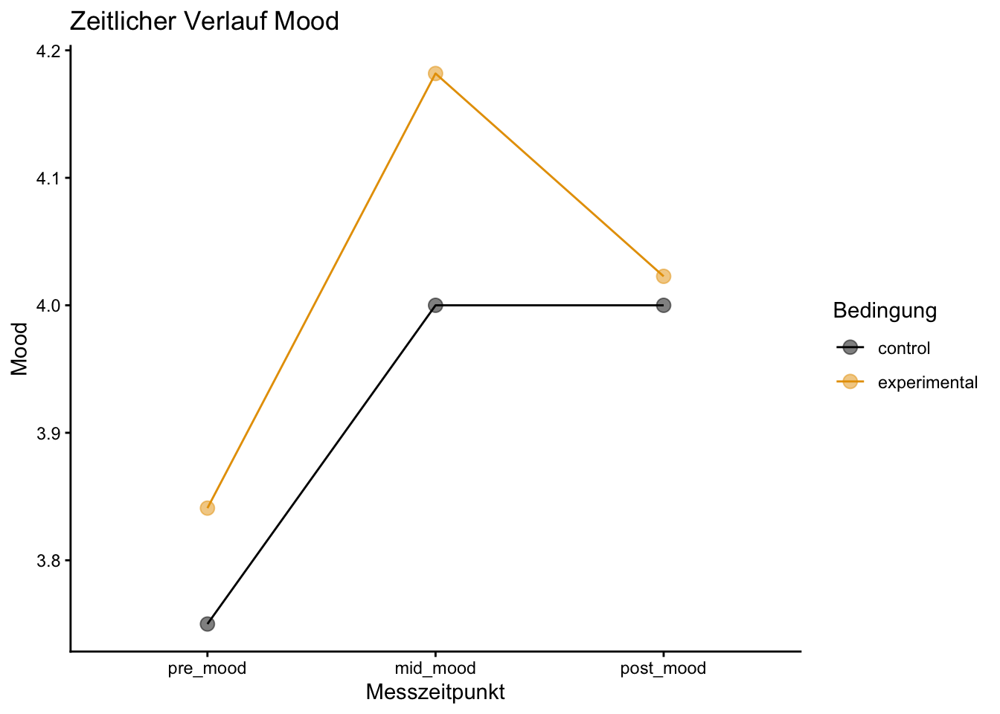

Peer Feedback: Bis 13.05 wird das Quarto-Dokument der jeweiligen Peerpartnerin bzw. des jeweiligen Peerpartners direkt im Dokument kommentiert. Die kommentierte Version wird anschliessend an die entsprechende Person zurückgesendet und das Peerfeedback zusätzlich auf ILIAS abgegeben.
Aufgabe 1: Datensatz einlesen und Deskriptive Statistik
Rows: 100 Columns: 8
── Column specification ────────────────────────────────────────────────────────
Delimiter: ";"
chr (1): condition
dbl (7): id, self_efficacy, pre_mood, mid_mood, post_mood, post_score, scree...
ℹ Use `spec()` to retrieve the full column specification for this data.
ℹ Specify the column types or set `show_col_types = FALSE` to quiet this message.
1.2 Mittelwert und Standardabweichung (Self-Efficacy)
Berechne den Mittelwert und die Standardabweichung der Variable self_efficacy für jede Gruppe (condition). Runde die Ergebnisse jeweils auf drei Nachkommastellen. Speichere diese deskriptive Statistik in einen neuen Dataframe ab.
NoteLösungen
practice_dataset_sum <- practice_dataset2 |>group_by(condition) |>summarize(mean_selfeff =round(mean(self_efficacy, na.rm =TRUE), 3),sd_selfeff =round(sd(self_efficacy, na.rm =TRUE), 3) #mit einem "," getrennt, koennt ihr beliebig viele zusammenfassende Berechnungen hintereinander in einem Call durchfuehren )
1.3 Tabelle formatieren mit kable
Stelle den in Aufgabe 1.2 erstellten Dataframe mit kable() als Tabelle dar. Ergänze eine Tabellenüberschrift, sinnvolle Spaltennamen und stelle sicher, dass die Werte mit drei Nachkommastellen angezeigt werden.
NoteLösungen
kable(practice_dataset_sum, caption ="Zusammenfassung der Self-Efficacy nach Bedingung", col.names =c("Bedingung", "Mittelwert Self-Efficacy", "SD Self-Efficacy"), digits =3 )
Zusammenfassung der Self-Efficacy nach Bedingung
Bedingung
Mittelwert Self-Efficacy
SD Self-Efficacy
control
68.993
10.21
experimental
70.596
8.25
1.4 Schiefe und Kurtosis
Berechne zusätzlich die Schiefe (skew) und Kurtosis (kurtosi) der Variable self_efficacy pro Gruppe (condition), mit entsprechenden Funktionen aus dem Paket psych.
NoteLösungen
practice_dataset_dis <- practice_dataset2 |>group_by(condition) |>summarize( skew =round(psych::skew(self_efficacy), 3), kurtosis =round(psych::kurtosi(self_efficacy), 3)) #Die Ergebnisse werden auf 3 Nachkommastellen gerundetprint(practice_dataset_dis)
# A tibble: 2 × 3
condition skew kurtosis
<chr> <dbl> <dbl>
1 control 0.11 -0.217
2 experimental 0.025 0.22
Aufgabe 2: Wide-to-Long Transformation
Wide-to-Long Transformation
Der Originaldatensatz enthält die Spalten pre_mood, mid_mood, post_mood. Verwandle diese mithilfe von pivot_longer() in einen Long-Datensatz namens mood_long. Die neue Spalte mit den Zeitpunkten soll mood_time heissen, die mit den Werten mood_rating.
NoteLösungen
mood_long <- practice_dataset2 |>pivot_longer(cols =starts_with("pre_mood"):post_mood, #hier waehlt ihr die Spalten aus, welche vom breiten (wide) Datensatz in einen laengeren (long) Datensatz ueberfuehrt werden sollennames_to ="mood_time", #hier benennt ihr die Spalte, in welcher die alten Spaltennamen abgelegt werdenvalues_to ="mood_rating"#hier benennt ihr die Spalte, in welcher die alten Spaltenwerte abgelegt werden )#alternativenmood_long <- practice_dataset2 |>pivot_longer(cols =c("pre_mood", "mid_mood", "post_mood"), #hier mit der expliziten Nennung aller entsprechenden Spaltennames_to ="mood_time",values_to ="mood_rating" )mood_long <- practice_dataset2 |>pivot_longer(cols =ends_with("mood"), #hier anhand dessen, womit der Spaltenname endetnames_to ="mood_time",values_to ="mood_rating" )
Aufgabe 3: Plot - Verlaufsdiagramm
3.1 Vorbereitung
Im nächsten Schritt verwenden wir den LONG-Datensatz (Siehe Aufgabe 2), um den Verlauf über die verschiedenen Zeitpunkte darzustellen. Das Ziel ist es, die Stimmung (mood) zu den unterschiedlichen Zeitpunkten, aggregiert nach den Konditionen, als Verlaufsdiagramm abzubilden.
Dafür soll mood_time in einen Faktor mit geordneten Faktorstufen (pre, mid und post) umgewandelt werden.
Erstelle einen neuen Summary-Datensatz, der für jede Kombination aus condition und mood_time den durchschnittlichen Wert von mood_rating enthält.
`summarise()` has regrouped the output.
ℹ Summaries were computed grouped by mood_time and condition.
ℹ Output is grouped by mood_time.
ℹ Use `summarise(.groups = "drop_last")` to silence this message.
ℹ Use `summarise(.by = c(mood_time, condition))` for per-operation grouping
(`?dplyr::dplyr_by`) instead.
3.2 Initialer Lineplot
Plotte die Elemente mood_time und mean_mood. Gruppiere die condition nach Farbe.
NoteLösungen
plot <- data_plot |>ggplot(aes(x = mood_time, y = mean_mood, color = condition, group = condition)) +geom_line()plot

Normalerweise würde das Argument color = condition ausreichen, damit ggplot implizit eine Gruppierung der Daten nach der Variable condition vornimmt und die Datenpunkte innerhalb des Plots verbindet. Da wir vorher aber auch die Variable mood_time explizit als Faktor gesetzt hatten, wird nun jede Kombination aus beiden Variablen implizit als Gruppierung angesehen. Daher gibt es ohne das von uns explizite Argument group = condition für jede Zeile eine eigene Gruppe und die Datenpunkte würden nicht verbunden werden. Probiere den ggplot-Call gerne ohne das entsprechende Argument aus und schaue, was passiert!
3.3 Farbpalette für Farbenblinde
Passe nun den Plot aus 3.2 so an, dass er eine Farbpalette verwendet, die für farbenblinde Personen geeignet ist: Nutze die folgende Palette.
Füge dem Diagramm Titel sowie Achsenbeschriftungen zu deinem Plot und verwende ein theme das du passend findest.

NoteLösungen
plot_3 <- plot_2 +labs( title ="Zeitlicher Verlauf Mood",y ="Mood", x ="Messzeitpunkt", color ="Bedingung" ) +theme_classic() print(plot_3)

3.6 Plot speichern
Speichere den Plot ab mit ggsave als png ab.
NoteLösungen
ggsave("mein_plot.png", plot = plot_3)
4. Subsetting und t-Test
Erstelle aus dem ursprünglichen Wide-Datensatz practice_dataset2 einen neuen Datensatz subset_mood, der nur Personen aus der Gruppe experimental enthält.
Prüfe nun (anhand des unter 4. erstellen Datensatzes) mittels eines gepaarten t-Test ob sich pre_mood und post_mood in der Gruppe experimental unterscheiden. Nutze dafür die Funktion t.test(). Lass dir das Ergebnis mit print() ausgeben.
Paired t-test
data: subset_mood$pre_mood and subset_mood$post_mood
t = -0.42731, df = 43, p-value = 0.6713
alternative hypothesis: true mean difference is not equal to 0
95 percent confidence interval:
-1.0399187 0.6762823
sample estimates:
mean difference
-0.1818182
# hier gilt paired = TRUE, da sich die beiden Messungen bedingen (sie sind beide von der selben Person, lediglich zu unterschiedlichen Zeitpunkten aufgenommen worden) = within-subjects Vergleich
5. Rendern und Hochladen
Rendere dein Skript als HTML
Lade deine Abgabe (qmd. Skript + HTML) als ZIP-Ordner in ILIAS hoch und schicke sie deinem/deiner Peerpartner:in.